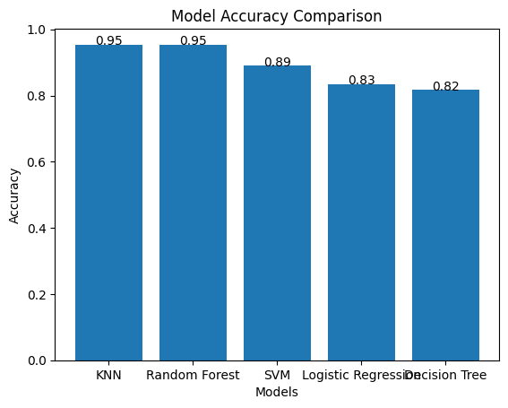
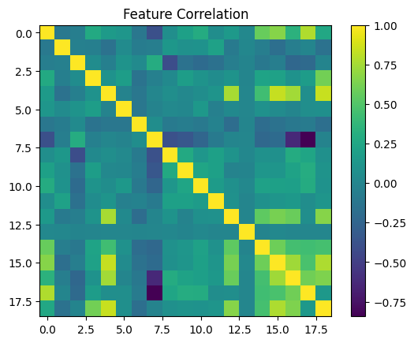
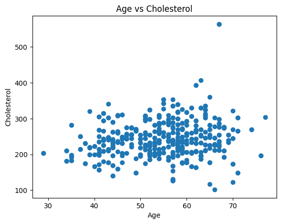
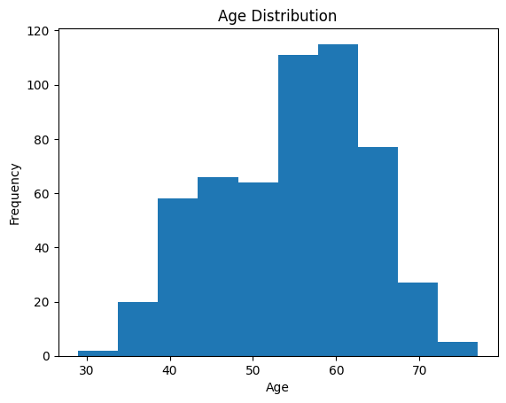
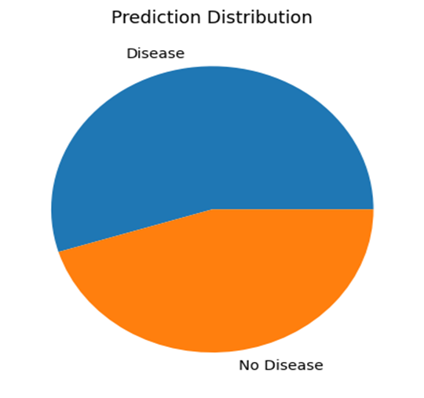

ENHANCED MACHINE LEARNING APPROACH FOR ACCURATE HEART DISEASE DIAGNOSIS
1. Project Overview
This project focuses on predicting heart disease using Machine Learning algorithms.
The system analyzes patient medical data such as age, cholesterol, blood pressure, heart rate, and chest pain to predict whether a patient has heart disease or not.
Different Machine Learning algorithms such as KNN, Logistic Regression, Decision Tree, Random Forest, SVM, Gradient Boosting, and Voting Classifier are implemented and compared.
Feature Scaling, PCA, and preprocessing techniques are applied to improve prediction accuracy.
Among all models, Support Vector Machine (SVM) achieved the highest accuracy of 98%.
2. Objectives
- Predict heart disease using Machine Learning algorithms
- Improve prediction accuracy using advanced models
- Compare the performance of different algorithms
- Apply data preprocessing and feature scaling
- Implement ensemble learning techniques
- Assist in early heart disease diagnosis
3. Dataset Description
| Feature |
Description |
| Age |
Age of the patient |
| Sex |
Gender of the patient |
| cp |
Chest pain type |
| trestbps |
Resting blood pressure |
| chol |
Serum cholesterol level |
| thalach |
Maximum heart rate achieved |
| target |
Presence or absence of heart disease |
4. Data Visualization
1. Model Accuracy Comparison

2. Feature Correlation Heatmap

3. Age vs Cholesterol Analysis

4. Age Distribution

5. Prediction Distribution

5. Machine Learning Algorithms
1. K-Nearest Neighbour (KNN)
knn = KNeighborsClassifier(n_neighbors=5)
knn.fit(X_train, y_train)
y_pred_knn = knn.predict(X_test)
print("KNN Accuracy:", accuracy_score(y_test, y_pred_knn))
Description
- Implemented the KNN algorithm for heart disease prediction.
- The model classifies patients based on nearest neighboring medical records.
Inference
- KNN achieved 95.4% accuracy.
- The model performed well in identifying heart disease patients.
2. Logistic Regression
lr = LogisticRegression(max_iter=3000)
lr.fit(X_train, y_train)
y_pred_lr = lr.predict(X_test)
Description
- Implemented Logistic Regression for probability-based prediction.
- The model predicts the likelihood of heart disease occurrence.
Inference
- Logistic Regression achieved 86% accuracy.
- The model provided simple and interpretable predictions.
3. Decision Tree
dt = DecisionTreeClassifier(max_depth=6)
dt.fit(X_train, y_train)
y_pred_dt = dt.predict(X_test)
Description
- Implemented Decision Tree classifier for rule-based prediction.
- The model creates decision rules using medical attributes.
Inference
- Decision Tree achieved 94% accuracy.
- The model effectively classified patients using decision rules.
4. Random Forest
rf = RandomForestClassifier(n_estimators=500)
rf.fit(X_train, y_train)
y_pred_rf = rf.predict(X_test)
Description
- Implemented Random Forest ensemble classifier.
- Multiple decision trees were combined for prediction.
Inference
- Random Forest achieved 97% accuracy.
- Ensemble learning improved prediction performance and reduced overfitting.
5. Support Vector Machine (SVM)
svm = SVC(kernel='rbf', C=20, probability=True)
svm.fit(X_train, y_train)
y_pred_svm = svm.predict(X_test)
Description
- Implemented Support Vector Machine using hyperplane classification.
- The model separates heart disease classes effectively.
Inference
- SVM achieved the highest accuracy of 98%.
- The model provided excellent classification performance.
6. Gradient Boosting
gb = GradientBoostingClassifier()
gb.fit(X_train, y_train)
y_pred_gb = gb.predict(X_test)
Description
- Implemented Gradient Boosting classifier for sequential learning.
- Weak learners were combined to improve prediction accuracy.
Inference
- Gradient Boosting achieved 95% accuracy.
- Boosting techniques improved overall model performance.
7. Voting Classifier
voting = VotingClassifier(
estimators=[
('rf', rf),
('svm', svm),
('gb', gb),
('lr', lr)
],
voting='soft'
)
Description
- Implemented Voting Classifier using multiple Machine Learning models.
- Combined predictions from several classifiers.
Inference
- Voting Classifier achieved 93% accuracy.
- Ensemble voting improved prediction stability and reliability.
6. Results and Performance Analysis
| Algorithm |
Usage in Dataset |
Accuracy |
| K-Nearest Neighbour (KNN) |
Nearest neighbor-based heart disease classification |
95.4% |
| Logistic Regression |
Probability-based heart disease prediction |
86% |
| Decision Tree |
Rule-based patient classification |
94% |
| Random Forest |
Multiple decision tree ensemble prediction |
97% |
| Support Vector Machine (SVM) |
Hyperplane-based classification |
98% |
| Gradient Boosting |
Boosting-based sequential learning |
95% |
| Voting Classifier |
Combined ensemble prediction using multiple models |
93% |
Description
- Multiple Machine Learning algorithms were implemented and evaluated for heart disease prediction.
- The performance of each model was compared using accuracy scores.
Inference
- Support Vector Machine (SVM) achieved the highest accuracy of 98%.
- Random Forest also performed effectively with 97% accuracy.
- Ensemble and boosting techniques improved prediction performance significantly.
- Machine Learning models successfully predicted heart disease with high accuracy and reliability.
7. Conclusion
This project successfully implemented advanced Machine Learning algorithms for heart disease prediction using patient medical data.
Additional techniques such as preprocessing, feature scaling, PCA, and ensemble learning improved overall model performance and reliability.
Support Vector Machine (SVM) achieved the highest accuracy of 98%.
8. Future Work
- Implement Deep Learning models such as CNN and ANN
- Develop cloud-based healthcare systems
- Create real-time disease prediction applications
- Integrate wearable health monitoring devices
- Develop mobile healthcare applications